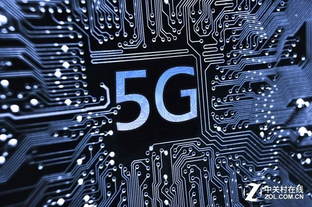
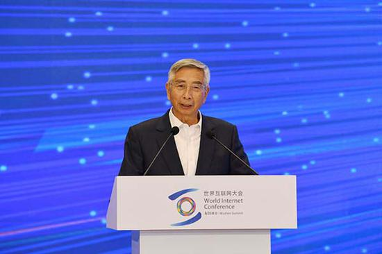
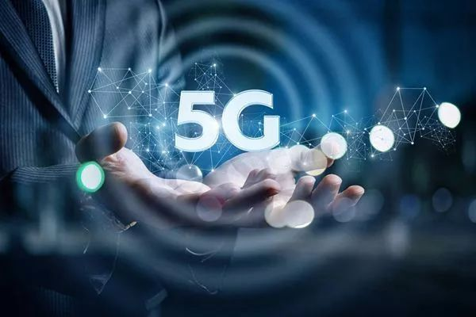

中国工程院院士倪光南：5G对生活、经济都会有重大变革
近日，第六届世界互联网大会在乌镇开幕。在中外部长高峰论坛上，中国工程院院士倪光南发表演讲称，5G对生活、经济都会有重大变革。“通过它满足我们人民对于美好生活各种各样新的需求，可以想像过去做不到的现在可以做到。5G对于4G的提高往往是一个数量级的甚至两个数量级的提高。”
“我相信如果我们能够做好结合当前5G等人工智能灯新技术的发展，会通过智慧城市的建设把整个城市，把我们的经济和人民生活提高一个新的阶段。”倪光南表示。
网络安全不是一个传统安全，比传统安全更要复杂”，谈及网络安全，倪光南认为，安全可控与开放创新两者并不矛盾，可以在一些关键核心技术上我们强调安全可控。“这些关键核心技术我想大家都知道，都是用钱不能卖到，市场不能换掉的。”
以下为倪光南演讲实录（来源：人民网）：
尊敬的各位嘉宾，今天的题目是智慧城市和网络安全。桐乡正在进行新型智慧城市的建设规划，一开始信息化项目建设的阶段就考虑到网络安全，这是非常重要的，也是习近平主席关于网络安全的思想重要原则之一。他曾经反复强调，网络安全和信息化是一题之两意，驱动之双轮，安全和发展要同步推进，安全是发展的前提，发展是安全的保障。
我觉得习主席这个思想非常重要，我们有很多工作如果我们讲网络信息化这些事情，如果我们把它作为两件事把网络安全和信息化隔离开来，有可能你做了一个事情信息化的建设但是它带来的效果不一定正面，因为网络安全的问题没有解决，就可能会隐私泄露，受到网络攻击、入侵等等。
这些问题只有在我们开始建设的时候就把网络安全信息化放在一起来讲作为一个事业。我们中国有网络安全和信息化，各地都有网信办，这是一个符合网络空间的客观规律。对于我们推进信息化像智慧城市建设是非常重要的，首先肯定桐乡在做这个工作之中是非常正确的一个方针。
下面就讲到网络安全怎么认识，其实网络安全不是一个传统安全，比传统安全更要复杂。就在9月份，网信办在全国举办了网络安全宣传周，大家知道习主席讲到了四个坚持，其中有一条坚持，要坚持安全可控，开放创新并重。就是两个事情要同时抓好，一个是安全可控，一个是开放创新。
因为有些人容易强调开放创新就不要考虑安全可控了，或者考虑安全可控就不符合开放创新这是片面的。我们知道这两者并不矛盾，可以在一些关键核心技术上我们强调安全可控，这个安全可控讲的展开一点就是自主可控，安全可行。就是安全可控对于关键可信技术的要求，这是客观造成的。这些关键核心技术我想大家都知道，都是用钱不能卖到，市场不能换掉的。
我们强调开放创新，我们世界是开放的，就像我们这次会议主张也是开放合作，这是我们的整体国家战略方针。我们在智慧城市的推进之中，我们也要遵守这样一个原则把开放创新和自主可控，安全可行结合起来。
但是经过我们的努力，都知道我们从1G、2G这些发展过来，到了4G基本上已经是和中国主导的TDD和一些法家国家主导的FDD基本上处于并跑。我们很高兴的看到5G我们在全世界，中国第一个在很多城市，很多地方已经适用了，我们正在推进5G的基础设施的建设。5G将会带来什么转变，对我们的生活也好，经济也好都会有重大变革，现在很难预料到讲不全，但是这个变革将会非常重大的。
像4G和3G相比大家能够说得清楚，4G能够进入电商、社交、共享经济、移动支付等等，造成了非常大的从生活来讲我们感到非常方便，满足了我们人民对美好生活的需求，不断增长的需求。对经济来讲看到一个数字，2018年中国的数字经济的总量是30万亿，占GDP34.8%，看到数字经济的迅速增长，希望桐乡进行智慧城市的规划要抓住5G新的信息技术的发展。通过它满足我们人民对于美好生活各种各样新的需求，可以想像过去做不到的现在可以做到。5G对于4G的提高往往是一个数量级的甚至两个数量级的提高。
同时我也刚才讲到对数字经济的拉动，所以我相信如果我们能够做好结合当前5G等人工智能灯新技术的发展，会通过智慧城市的建设把整个城市，把我们的经济和人民生活提高一个新的阶段，谢谢大家。
位置：小冷是来自神秘领域的陌生人，说太多会被抓 联系电话：XXXXXXXXXXX 电子邮箱：XXXXXX@XX.com
版权所有©小冷